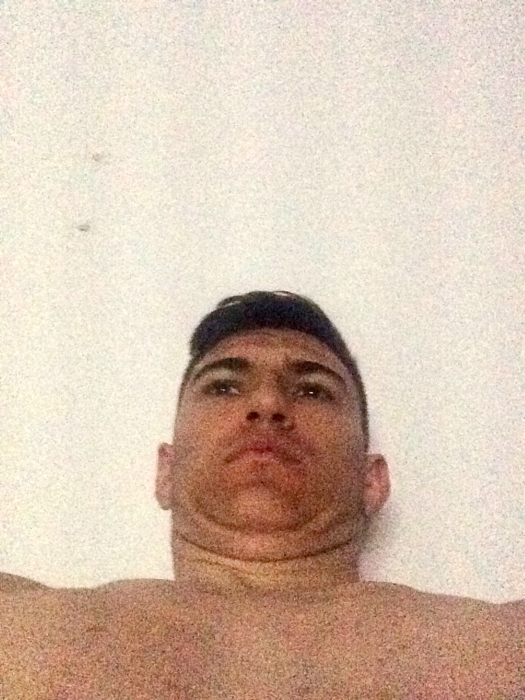

Etudiant
game developer
Profil
En tant qu'étudiant en informatique, motivé et assidu, je cherche un emploi étudiant qui me permettra d'améliorer mes aptitudes professionnelles tout en supportant financièrement mes études. Doté d'une bonne capacité d'analyse, je suis organisé et rigoureux, ce qui me permet de m'acclimater rapidement à différents environnements de travail. Ma capacité à assumer mes responsabilités et à collaborer efficacement me donne la possibilité de m'impliquer totalement dans les tâches qui me sont attribuées.
Atouts & Compétences
Qualités (Soft Skills)
- • Adaptabilité & Polyvalence
- • Travail en équipe
- • Gestion du stress
- • Ponctualité & Rigueur
Informatique (Auto-formation)
- • Montage, Maintenance & Optimisation PC
- • Bases HTML / CSS / JS
- • Suite Office
- • Réseau
Langues
- • Français : Maternel
- • Anglais : Niveau B1 / B2
- • Espagnol : Notions
Diplômes
- • Brevet des collèges
- • Bac spécialité NSI - Mathématiques
Parcours
Contrôleur qualité & séquenceur à TMF OPERATING - LSI
2025 - 2026
Développement de l'autonomie et de la résistance physique sur différents sites industriels.
Contrôleur qualité pour Trigo
2024 - 2025
Vérification de conformité et rigueur opérationnelle.
Babysitting
2021 - 2023
Responsabilité et gestion de l'emploi du temps
Stage à la Médiathèque "Liberté"
2019 - 2020
Responsabilité et gestion de l'emploi du temps
Stage à l'Enseigne & Lettrage Naveau
2018 - 2019
Responsabilité et gestion de l'emploi du temps